Note
Go to the end to download the full example code
Quick start guide to distributions¶
Abstract¶
In this example, we present classes for univariate and multivariate distributions.
We demonstrate the probabilistic programming capabilities of the library.
For univariate distributions, we show how to compute the probability density,
the cumulated probability density and the quantiles.
We also show how to create graphics.
The ComposedDistribution class, which creates a distribution based on its
marginals and its copula, is presented.
We show how to truncate any distribution with the TruncatedDistribution class.
Univariate distribution¶
The library is a probabilistic programming library: it is possible to create a random variable and perform operations on this variable without generating a sample.
In the OpenTURNS platform, several univariate distributions are implemented. The most commonly used are:
Beta,Weibull.
import openturns.viewer as otv
import openturns as ot
import openturns.viewer as viewer
from matplotlib import pylab as plt
ot.Log.Show(ot.Log.NONE)
The uniform distribution¶
Let us create a uniform random variable  .
.
uniform = ot.Uniform(2, 5)
The drawPDF() method plots the probability density function.
graph = uniform.drawPDF()
view = viewer.View(graph)
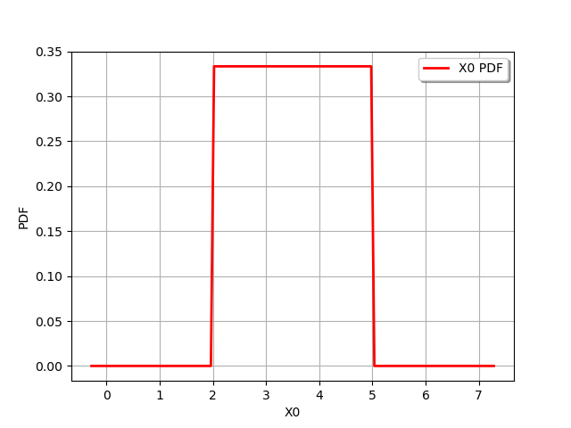
The computePDF() method computes the probability distribution at a specific point.
uniform.computePDF(3.5)
0.3333333333333333
The drawCDF() method plots the cumulated distribution function.
graph = uniform.drawCDF()
view = viewer.View(graph)
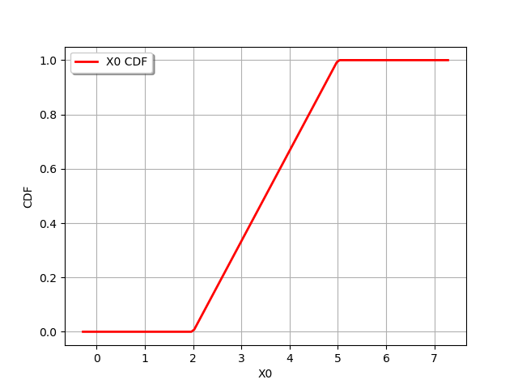
The computeCDF() method computes the value of the cumulated distribution function a given point.
uniform.computeCDF(3.5)
0.5
The getSample() method generates a sample.
sample = uniform.getSample(10)
sample
The most common way to “see” a sample is to plot the empirical histogram.
sample = uniform.getSample(1000)
graph = ot.HistogramFactory().build(sample).drawPDF()
view = viewer.View(graph)
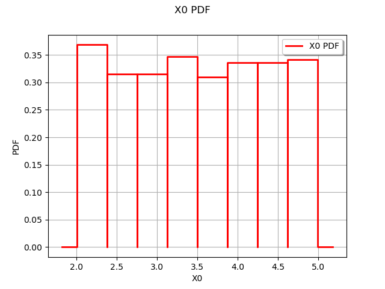
Multivariate distributions with or without independent copula¶
We can create multivariate distributions by two different methods:
we can also create a multivariate distribution by combining a list of univariate marginal distribution and a copula,
some distributions are defined as multivariate distributions:
Normal,Dirichlet,Student.
Define a multivariate Normal distribution in dimension 4
distribution = ot.Normal(4)
distribution
Since the method based on a marginal and a copula is more flexible, we illustrate below this principle.
In the following script, we define a bivariate distribution made of two univariate distributions (Gaussian and uniform) and an independent copula.
The second input argument of the ComposedDistribution class is optional: if it is not specified, the copula is independent by default.
normal = ot.Normal()
uniform = ot.Uniform()
distribution = ot.ComposedDistribution([normal, uniform])
distribution
We can also use the IndependentCopula class.
normal = ot.Normal()
uniform = ot.Uniform()
copula = ot.IndependentCopula(2)
distribution = ot.ComposedDistribution([normal, uniform], copula)
distribution
We see that this produces the same result: in the end of this section, we will change the copula and see what happens.
The getSample() method produces a sample from this distribution.
distribution.getSample(10)
In order to visualize a bivariate sample, we can use the Cloud class.
sample = distribution.getSample(1000)
showAxes = True
graph = ot.Graph("X0~N, X1~U", "X0", "X1", showAxes)
cloud = ot.Cloud(sample, "blue", "fsquare", "") # Create the cloud
graph.add(cloud) # Then, add it to the graph
view = viewer.View(graph)
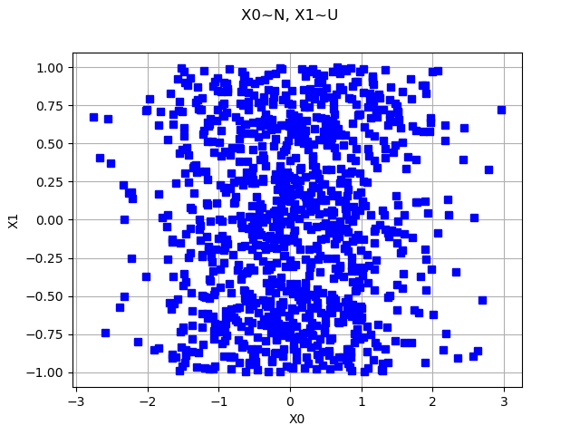
We see that the marginals are Gaussian and uniform and that the copula is independent.
Define a plot a copula¶
The NormalCopula class allows one to create a Gaussian copula. Such a copula is defined by its correlation matrix.
R = ot.CorrelationMatrix(2)
R[0, 1] = 0.6
copula = ot.NormalCopula(R)
copula
We can draw the contours of a copula with the drawPDF() method.
graph = copula.drawPDF()
view = viewer.View(graph)
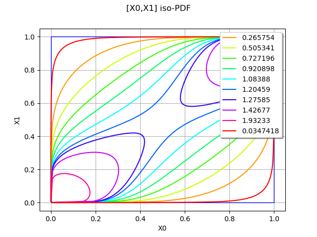
Multivariate distribution with arbitrary copula¶
Now that we know that we can define a copula, we create a bivariate distribution with normal and uniform marginals and an arbitrary copula. We select the Ali-Mikhail-Haq copula as an example of a non trivial dependence.
normal = ot.Normal()
uniform = ot.Uniform()
theta = 0.9
copula = ot.AliMikhailHaqCopula(theta)
distribution = ot.ComposedDistribution([normal, uniform], copula)
distribution
sample = distribution.getSample(1000)
showAxes = True
graph = ot.Graph("X0~N, X1~U, Ali-Mikhail-Haq copula", "X0", "X1", showAxes)
cloud = ot.Cloud(sample, "blue", "fsquare", "") # Create the cloud
graph.add(cloud) # Then, add it to the graph
view = viewer.View(graph)
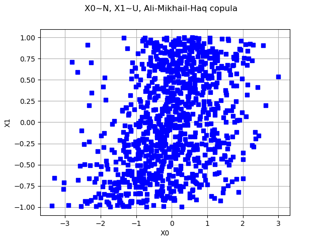
We see that the sample is quite different from the previous sample with independent copula.
Draw several distributions in the same plot¶
It is sometimes convenient to create a plot presenting the PDF and CDF on the same graphics. This is possible thanks to Matplotlib.
beta = ot.Beta(5, 7, 9, 10)
pdfbeta = beta.drawPDF()
cdfbeta = beta.drawCDF()
exponential = ot.Exponential(3)
pdfexp = exponential.drawPDF()
cdfexp = exponential.drawCDF()
grid = ot.GridLayout(2, 2)
grid.setGraph(0, 0, pdfbeta)
grid.setGraph(0, 1, cdfbeta)
grid.setGraph(1, 0, pdfexp)
grid.setGraph(1, 1, cdfexp)
view = otv.View(grid)
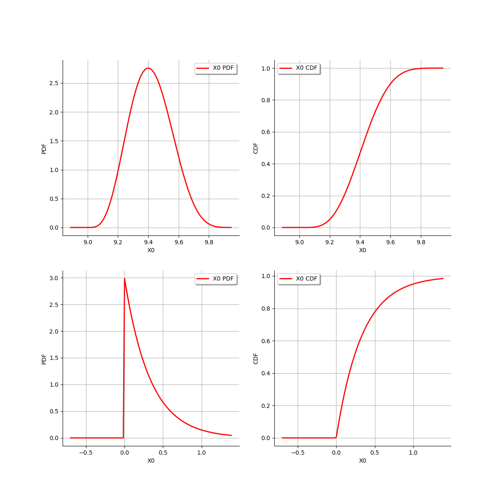
Truncate a distribution¶
Any distribution can be truncated with the TruncatedDistribution class.
Let  (resp.
(resp.  ) the PDF (resp. the CDF) of the real
random variable
) the PDF (resp. the CDF) of the real
random variable  . Let
. Let  and
and  two reals with
two reals with  .
Let
.
Let  be the random variable defined by:
be the random variable defined by:
![Y = \max(a, \min(b, X)).]()
Its distribution is the distribution of truncated to the ![[a,b]]() interval.
Therefore, the PDF of is:
interval.
Therefore, the PDF of is:
![f_Y(y) = \frac{f_X(y)}{F_X(b) - F_X(a)}]()
if ![y\in[a,b]]() and
and  otherwise.
otherwise.
Consider for example the log-normal variable with mean  and standard deviation
and standard deviation  .
.
X = ot.LogNormal()
graph = X.drawPDF()
view = viewer.View(graph)
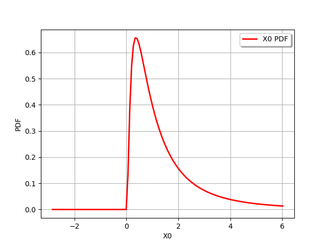
We can truncate this distribution to the ![[1,2]]() interval. We see that the PDF of the distribution becomes discontinuous at the truncation points 1 and 2.
interval. We see that the PDF of the distribution becomes discontinuous at the truncation points 1 and 2.
Y = ot.TruncatedDistribution(X, 1.0, 2.0)
graph = Y.drawPDF()
view = viewer.View(graph)
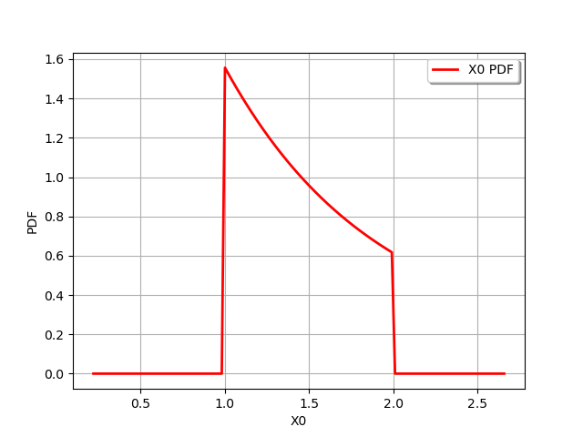
We can also also truncate it with only a lower bound.
Y = ot.TruncatedDistribution(X, 1.0, ot.TruncatedDistribution.LOWER)
graph = Y.drawPDF()
view = viewer.View(graph)
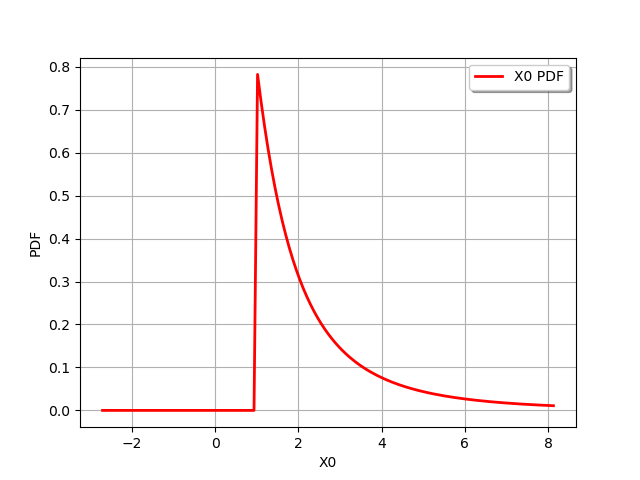
We can finally truncate a distribution with an upper bound.
Y = ot.TruncatedDistribution(X, 2.0, ot.TruncatedDistribution.UPPER)
graph = Y.drawPDF()
view = viewer.View(graph)
plt.show()
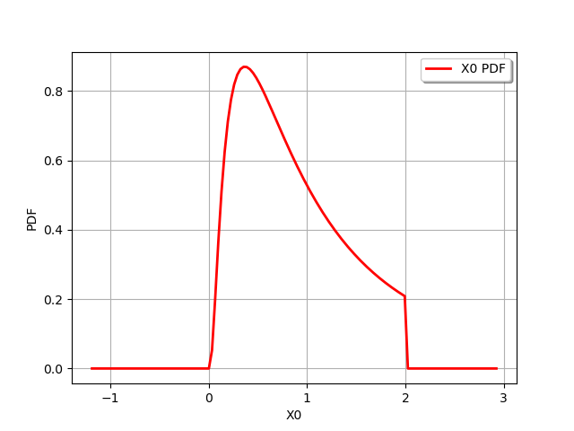
In the specific case of the Gaussian distribution, the specialized TruncatedNormal distribution can be used
instead of the generic TruncatedDistribution class.